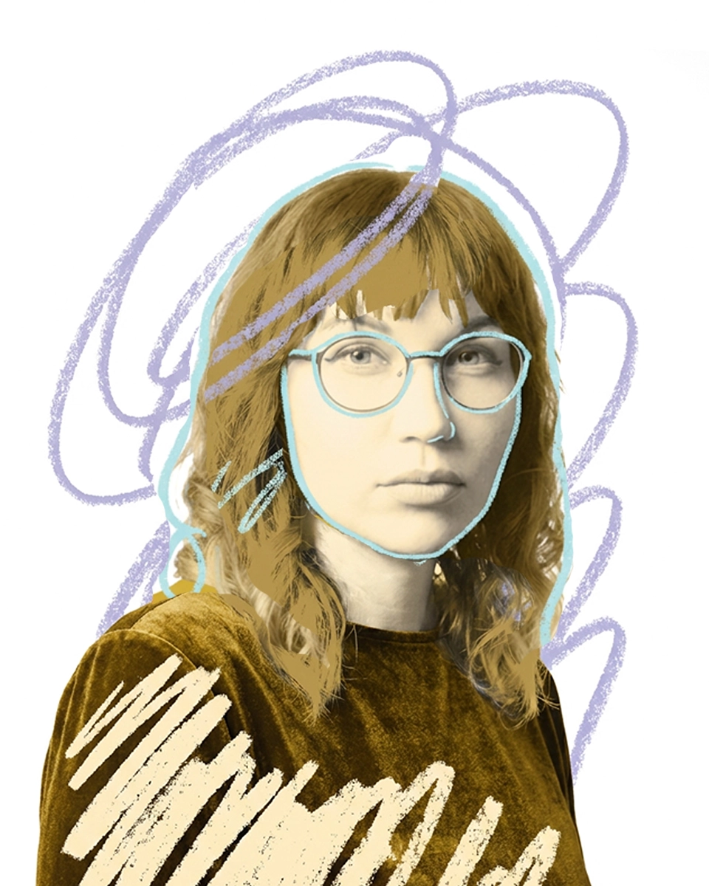

Multimediedesignstuderende · KEA
Daria Novikova
Jeg studerer Multimediedesign på KEA. Skiftet hertil kom ikke fra ingensteds — typografi og grafisk design har været en egentlig besættelse i mange år, sideløbende med alt det andet jeg har lavet. På et tidspunkt gav det ikke mening at blive ved med at sidde ved siden af det.
Inden KEA arbejdede jeg med rumlig design, flisedesign, møbler og blomster. Det har givet mig en præcis fornemmelse for, hvad der visuelt virker og ikke virker — en fornemmelse jeg nu forsøger at omsætte til skærme i stedet for vægge.
Multimediedesign — KEA, København
Blomsterdekoratør & Visual Merchandiser — Frihedens Blomster, København
Visuelle retailmiljøer og florale installationer med fokus på æstetik og brand. Konceptudvikling og markedsføringsmaterialer til butik. Styling af blomsterarrangementer og produktdisplays.
Kreativ Designer — D&O Totalentreprise ApS
Produktkoncepter med fokus på trends, funktionalitet og visuel identitet. Design af møbelkollektioner, skitser, prototyper og 3D-visualiseringer. Samarbejde med producenter og produktionspartnere.
Indretningsdesigner — IMENNO Arkitektur- og Designstudio
Indretningsløsninger til erhvervs- og privatprojekter. Rådgivning om materialer, farver og overflader. ArchiCAD-tegninger, 3D-visualiseringer og præsentationer til kunder.
Surface Designer — Volgograd Ceramic Plant
Design af flisekollektioner til køkken og badeværelse. Digitale overflademønstre, farvepaletter og trendbaserede koncepter. Tekniske tegninger og udstillingsprototyper.
Freelance Grafisk Designer — Selvstændig
Visuelle koncepter, branding og produktdesign for kunder. Logoer, visuelle identiteter, mønstre og trykmaterialer. Projektstyring fra brief til levering inkl. kundedialog og kontrakter.
Hvad baggrunden giver
Mange år med rumlig design har lært mig at læse et rum — at forstå hvad der bærer blikket, hvad der skaber ro, og hvad der forstyrrer uden grund. Det er en fornemmelse, der ikke forsvinder, når lærredet skifter fra vægge til skærme. Men det er heller ikke nok. Multimediedesign har givet mig det jeg manglede: en metode, et sprog og en forståelse af brugeren som den person alt det visuelle i sidste ende er til for.